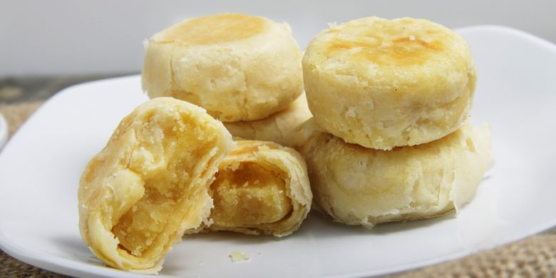
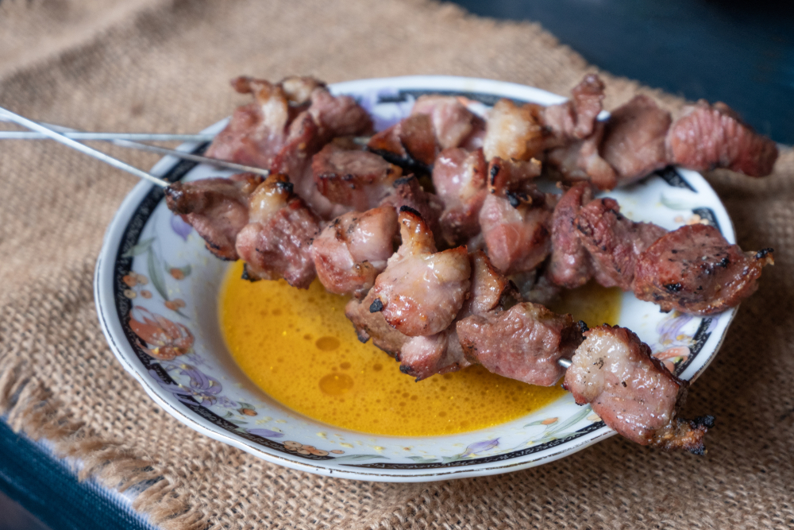
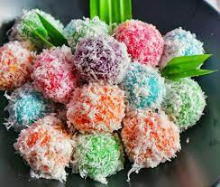
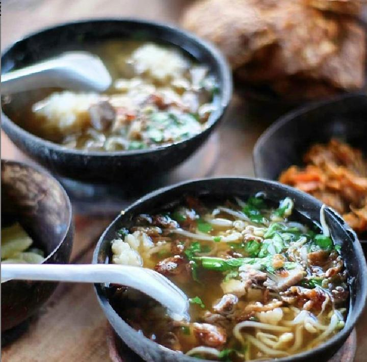

Beberapa Pilihan Kuliner di Jogja :
Gudeg

Gudeg adalah hidangan khas Provinsi Yogyakarta dan Jawa Tengah yang terbuat dari nangka muda yang dimasak dengan santan. Perlu waktu berjam-jam untuk membuat hidangan ini. Warna coklat biasanya dihasilkan oleh daun jati yang dimasak bersamaan.
Bakpia

Bakpia Bakpia, hopia adalah kue pastri asal Fujian gulungan tepung panggang dengan berbagai isi. Kulit bakpia dibuat dari campuran gula dan garam yang diaduk dalam air hingga larut lalu dibentuk menjadi adonan dengan menambahkan tepung terigu.
Sate Klathak

Sate klatak adalah sebuah hidangan sate kambing asal Kecamatan Pleret, Kabupaten Bantul, Yogyakarta. Dalam bahasa Jawa, kegiatan membakar sate di pembakaran terbuka disebut "klathak". Sate ini sangat berbeda dari ragam sate lainnya, yang biasanya memakai garam dan lada sebagai bumbu utamanya
Cenil

Cenil atau cetil adalah makanan yang terbuat dari pati ketela pohon. Makanan ini bisa dibentuk bulat-bulat kecil atau kotak kemudian diberi warna sesuai selera sebelum direbus. Cenil biasanya disajikan dengan parutan kelapa dan ditaburi gula pasir
Soto Bathok

Soto bathok adalah makanan khas Jogja yang berasal dari Sleman. Uniknya, soto ini disajikan dalam mangkuk tempurung kelapa.